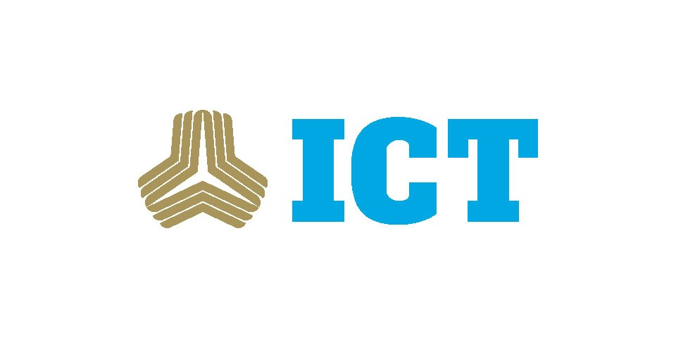

国際高等専門学校ICTとは何か
日本三名山のひとつ白山のふもとに新たに建設された「白山麓キャンパス」は1～2年生、教員、スタッフ、さらに地元の方々と交流する「英語によるラーニングコミュニティ」。数学、理科、情報など大部分の科目を英語で学びます。さらに、日本初の理工系リベラルアーツ教育を通してどのような時代が到来しても柔軟に対応し、多彩な課題を解決できる力を身につけます。
理工系リベラルアーツ教育
世界のイノベーションシーンの教育実践としてデザインシンキング*1 「CDIO」*2 を取り入れた『エンジニアリングデザイン教育』です。予測困難な時代にあっても自分を活かしていける、自律性、チャレンジ精神、リーダーシップ、チームワークといった人間力と、新たな知識を獲得し、それを活用して多様な課題を解決していく力を身につけます